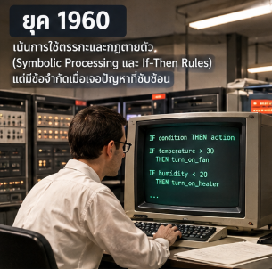
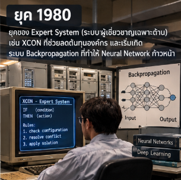
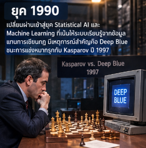
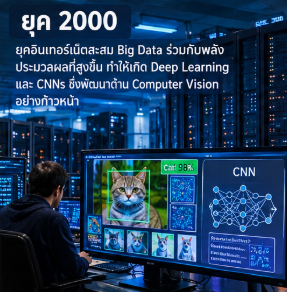

AI ทำงานอย่างไร?
เริ่มจากข้อมูล
นิยามและแนวคิดเริ่มต้น: เป็นแนวคิดที่ต้องการให้เครื่องจักรสามารถคิดและทำงานได้เหมือนมนุษย์ เริ่มต้นขึ้นในปี 1950 โดย Alan Turing (ผู้คิดค้น Turing Test)
วิวัฒนาการตามยุคสมัย:
ยุค 1960:
เน้นการใช้ตรรกะและกฎตายตัว (Symbolic Processing และ If-Then Rules) แต่มีข้อจำกัดเมื่อเจอปัญหาที่ซับซ้อน

ยุค 1970:
(AI Winter): ยุคตกต่ำเนื่องจากขาดแคลนข้อมูลและเงินทุนสนับสนุน
ยุค 1980:
ยุคของ Expert System (ระบบผู้เชี่ยวชาญเฉพาะด้าน) เช่น XCON ที่ช่วยลดต้นทุนองค์กร และเริ่มเกิดระบบ Backpropagation ที่ทำให้ Neural Network ก้าวหน้า

ยุค 1990:
เปลี่ยนผ่านเข้าสู่ยุค Statistical AI และ Machine Learning ที่เน้นให้ระบบเรียนรู้จากข้อมูลแทนการเขียนกฎ มีเหตุการณ์สำคัญคือ Deep Blue ชนะการแข่งหมากรุกกับ Kasparov ปี 1997

ยุค 2000:
ยุค 2000: ยุคอินเทอร์เน็ตสะสม Big Data ร่วมกับพลังประมวลผลที่สูงขึ้น ทำให้เกิด Deep Learning และ CNNs ซึ่งพัฒนาด้าน Computer Vision อย่างก้าวหน้า

ยุค 2010 - ปัจจุบัน:
การนำ GPU มาใช้ประมวลผล, ชัยชนะของ AlphaGo, และการเกิดโมเดล Transformer

คำศัพท์ที่ควรรู้
ข้อมูล (Data) ตัวอย่างหรือข้อเท็จจริงที่ระบบนำมาใช้เรียนรู้หรือวิเคราะห์
อัลกอริทึม (Algorithm) ขั้นตอนหรือวิธีที่ใช้ประมวลผลข้อมูลเพื่อแก้ปัญหา
แบบจำลอง (Model) ผลลัพธ์จากการฝึก ซึ่งใช้คาดการณ์หรือทำงานกับข้อมูลใหม่
ข้อมูลที่ใช้ฝึกไม่ครอบคลุมหรือเพียงพอ อาจส่งผลให้ได้ผลลัพธ์ที่ไม่ถูกต้องหรือผิดพลาด เราจึงต้องทดสอบและในขั้นตอนสุดท้าย